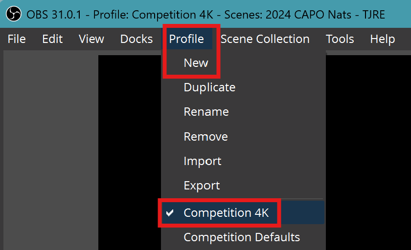
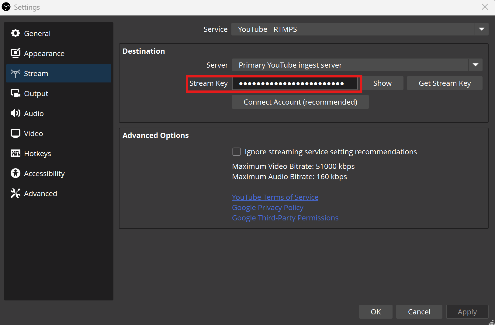
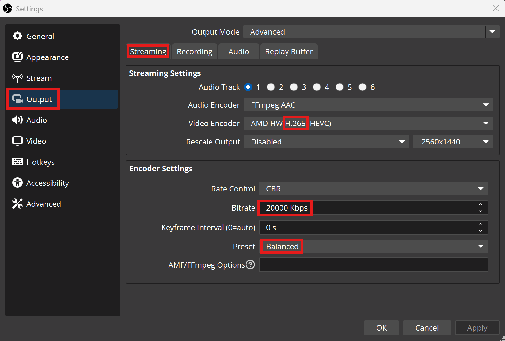
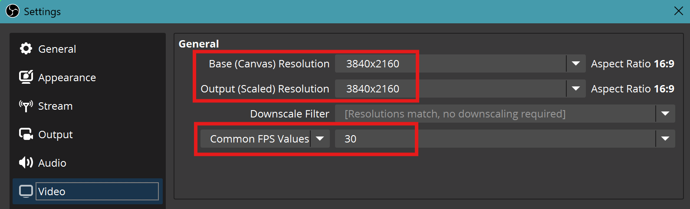

OBS Profile
Configuring OBS for 4K¶
Profile Settings¶
All the settings below will be stored as a Profile.
-
Always create a new profile, so that existing stream profile settings are not lost
-
Profiles do not store the Scenes or Sources; these are stored under Scene Collection
OBS Profiles can be Exported and Imported
Check List |
OBS |
|---|---|
| OBS → Profile → New |  |
Stream Settings¶
- OBS Settings MUST use a stream key for 4K
- Connect Account option will NOT use a custom 4K Stream Key
Check List |
OBS |
|---|---|
| OBS → File → Settings → Stream |  |
Output Settings¶
Output settings will greatly depend on hardware CPU + GPU, these are the minimum settings
- Output Mode Advanced
- Audio Track - 1
- H.264 or H.265 (Hardware Required, maybe AMD or Nvidia, or even Intel)
- Bitrate -- 20000 Kbps
- Preset -- Balanced
4K is not possible on old hardware.
Check List |
OBS |
|---|---|
| OBS → File → Settings → Output → Streaming |  |
Audio Settings¶
Default must be changed to a lower value for Track 1 to match YouTube recommendations
- Audio Bitrate - 128
Check List |
OBS |
|---|---|
| OBS → File → Settings → Output → Audio |  |
OBS Canvas¶
Set both
- Base Canvas (Preview) and
- Output (Streaming)
to 3840x2160 (4K/2160p) resolution.
It can be manually typed in if the dropdown box does not show it (Which will be due to physical monitor resolution limitations)
FPS will be determined by Hardware, 60 is only possible if the hardware is capable
Check List |
OBS |
|---|---|
| OBS → File → Settings → Video |  |
| OBS Canvas View |  |